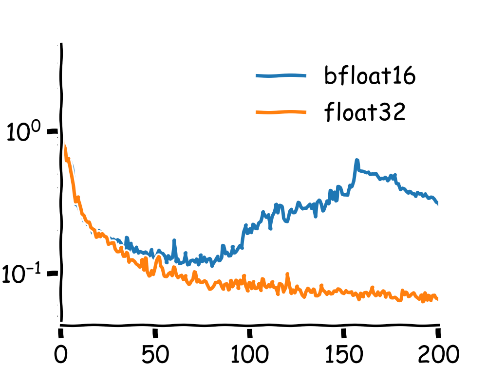

I think every field has its own list of "things that everyone knows but nobody bothers to write down." I'm writing down things that are obvious in hindsight and one can reason through, but I mostly encountered experimentally. Hopefully it's of use to someone!
I often work with both ordered and unordered point clouds, which we represent as sequences $[L, 3]$. When training a neural network, we generally have some kind of upsampling operator that takes us to a latent space. Models like Proteina and AlphaFold3 are diffusion models over protein space, ADiTs operate over general molecules, etc. One thing I've found is that it's often very hard to train models that operate over these "raw" coordinates (as opposed to some kind of latent invariant representation of coordinates) stably if you go down to float16 or bfloat16.
First, here are two identical training runs (y axis is a flow loss, x-axis is gradient updates / 250) to convince you that this is actually something worth being aware of.

Why does this happen? We store numbers using three parts: the sign bit, the mantissa, and the exponent. The sign bit controls the sign, the exponent controls the scale, and the mantissa controls the precision. Especially for representing larger point clouds like proteins (as opposed to small molecules), we often do actually care about the precision that the mantissa gives us. Explicitly, a number $x$ is expressed as
$$x = (-1)^{\text{sign}} \times (1 + \text{mantissa}) \times 2^{\text{exponent} - \text{bias}}$$Let's think about float16, where we have 1 sign bit, 5 exponent bits, and 10 mantissa bits. I think some people still train in float16, but we generally avoid it because it causes all kinds of mixed precision errors (this is what torch.amp.GradScaler was meant to handle). In a typical network, activations can be anywhere from $10^{-3}$ to $1000$ or more, gradients can be $0$ for some parameters and $\sim 10^2$ for others, etc. When we backprop, we're combining numbers that are really different in magnitude, which can cause a bunch of problems with float16. The smallest float16 magnitude is around $10^{-8}$, and we can easily have gradients smaller than that. Similarly, we can have numbers bigger than $\sim 10^4$, which is the max value in float16. These underflow and overflow errors can couple with precision issues and make training tricky in float16, which is why GradScaler hides a lot of that logic and keeps some operations in float32 for you.
bfloat16 solves some of these problems by trading off precision for a wider range, so we don't run into these issues. The values stay representable, and the training is typically just a bit noisier (but we save a lot of memory and can often use a larger batch size, which tends to compensate by giving a lower variance estimator for the gradient). However, the precision loss matters for the special case of coordinates. At bfloat16, we have $2^{-7}\approx 0.008$ precision. We'll often have terms like $\Vert x_i - x_j\Vert^2$. Perform enough operations on these terms (e.g., do an $L\times L$ pairwise term) and you'll get all kinds of training instabilities, so we stick with float32 for any geometric operations.
Especially when dealing with proteins, which are long chains of atomic coordinates, we often work in nanometers so the values on the outside (i.e., the end of the chain) stay small. In this case, a difference of 0.5 A becomes 0.05 nm, which is getting a bit close to that 0.008 precision tolerance we said we had. Subtract a few of those, square them, and you can see how we're running up against that precision boundary.
This makes some sense, but I don't think this is the full story and I don't have a better answer at the moment. When I trained the model in the loss curves earlier, the first operation was a Linear -> SiLU() -> Linear -> LayerNorm, so we were immediately in a higher dimensional space without any inter coordinate mixing or anything. There was pair biasing, which could have been the issue; it makes me wonder if I should just keep pair biasing and that first linear layer in float32 and whether that would solve all these problems. Probably an ablation worth running someday!